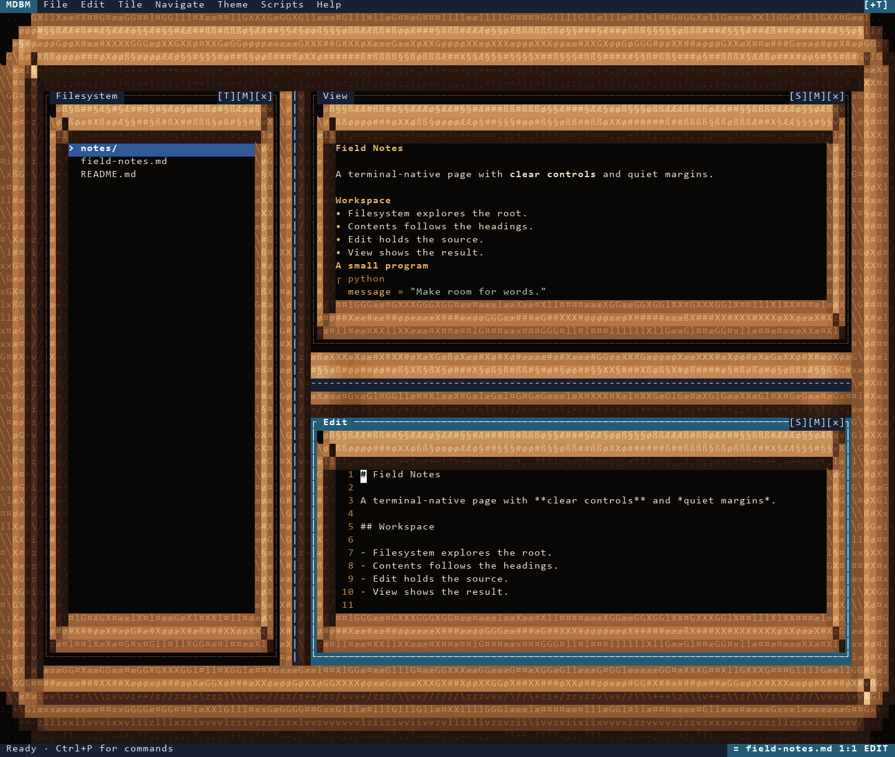
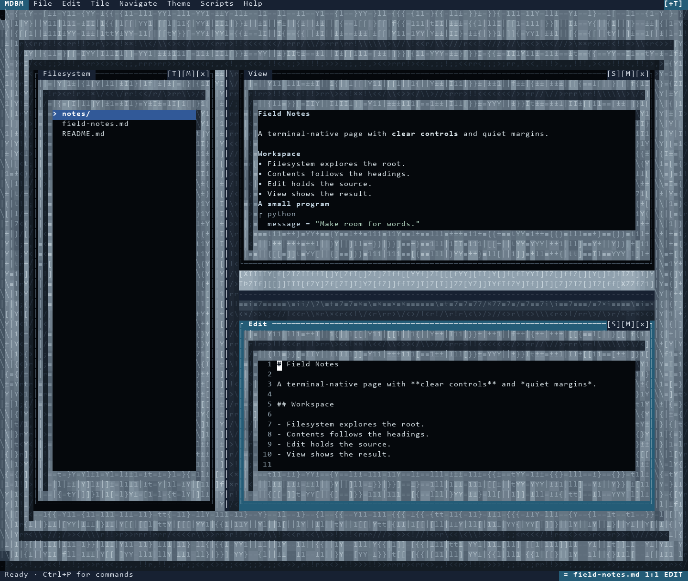
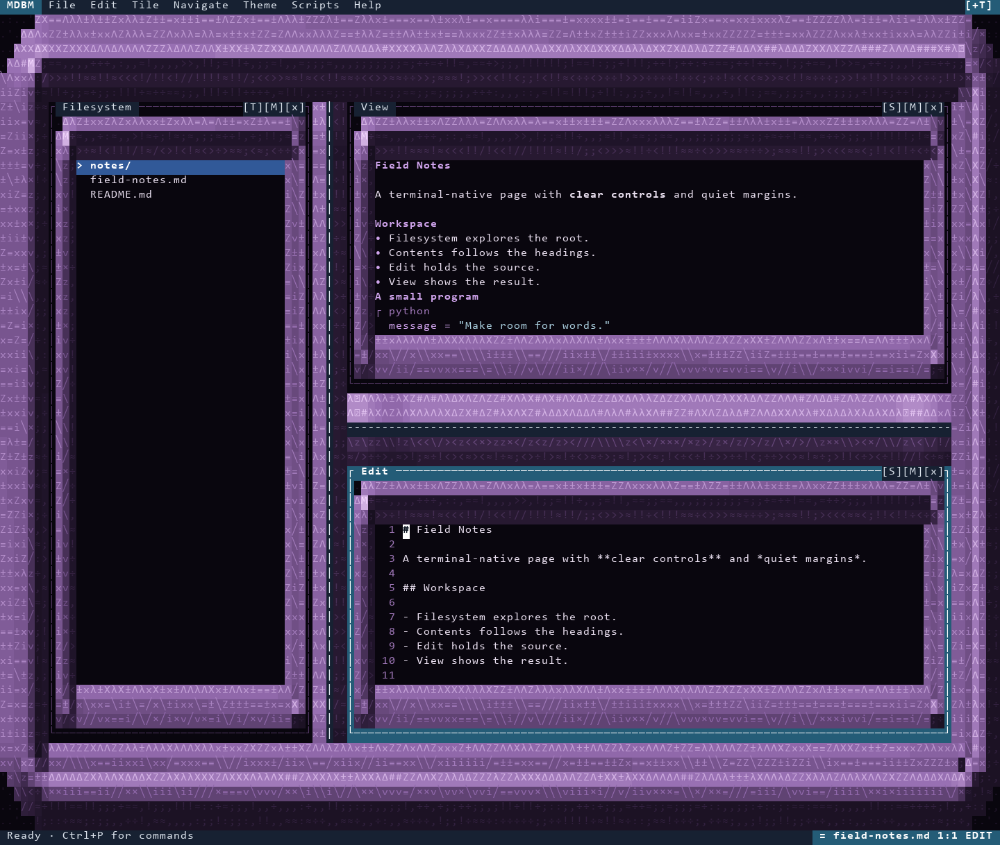
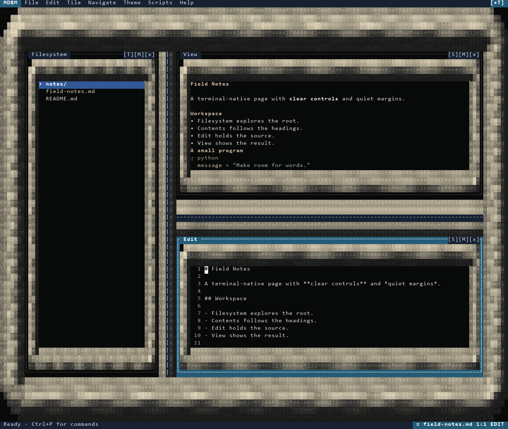
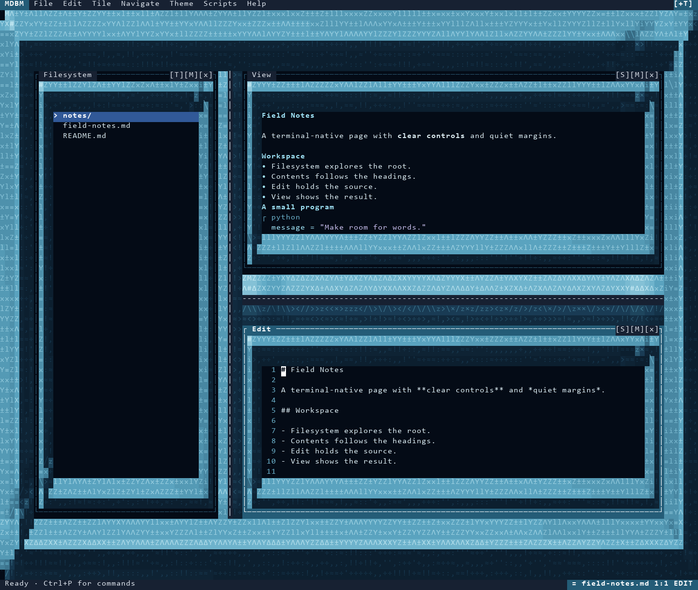
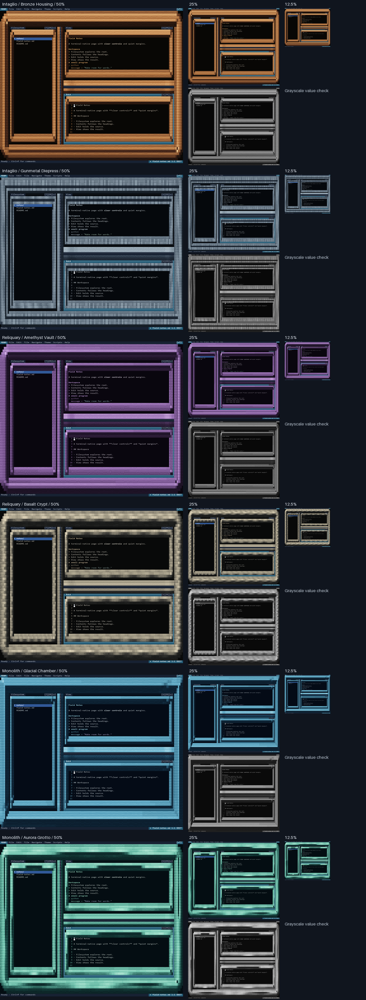

MDBM / Sculpted environments
Actual compositor snapshots at 144 × 58 cells with fixed source, focus, seed and time. Click a preview for full size. Animated themes are shown as still frames. Terminal font rendering can differ; these previews are not native terminal acceptance tests.
Intaglio / Bronze Housing
--theme intaglio-bronze

Intaglio / Gunmetal Diepress
--theme intaglio-gunmetal

Reliquary / Amethyst Vault
--theme reliquary-amethyst

Reliquary / Basalt Crypt
--theme reliquary-basalt

Monolith / Glacial Chamber
--theme monolith-glacial

Reduced-scale shading review
50%, 25%, 12.5%, and grayscale crops of the actual cell render. The grayscale crop checks value structure; it is not a monochrome terminal simulation.
